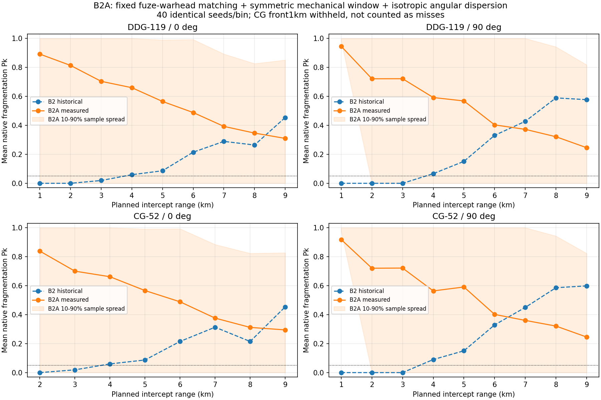
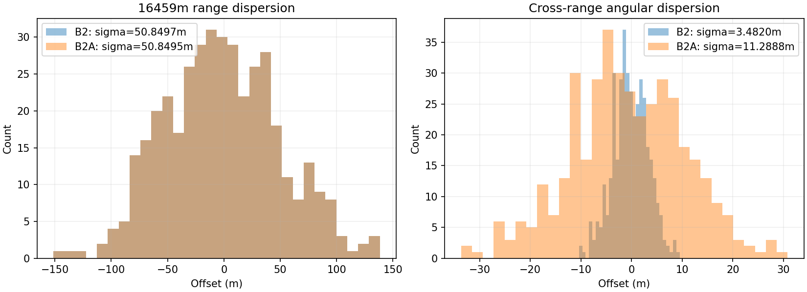
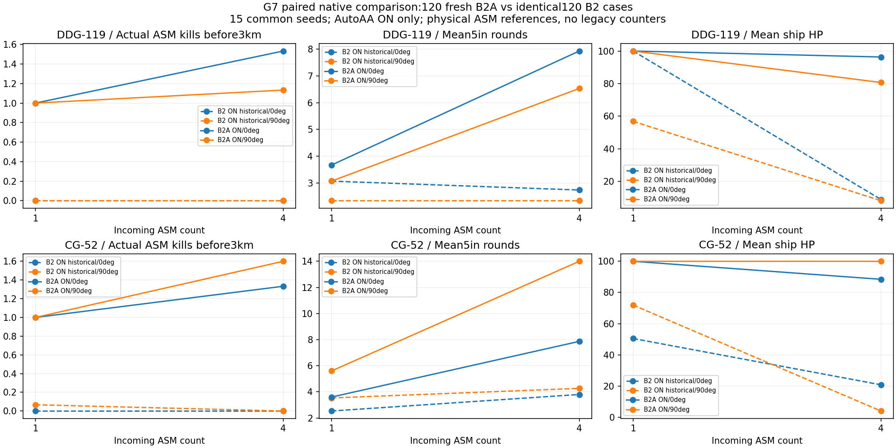

지정 측정 완료. 하푼 nativeFinish/종료로그2단언은 실제 피해MISS로 미통과이며 기준값/계수/seed로 맞추지 않았다.



# GUN_B2A — 신관–탄두 정합·AIR 조준 창 분리·등방 산포 작성 2026-11-01 09:24 KST. 사용자 지시서 순서1→4를 실행했다. 기준 gun-b2 c1d17cee / B2 HTML c48c2396…. 제품은 같은 Aegis_SIM_v48_WIP_GUN_B2.html을 갱신했다. 모든 새 수치는 게임용 SIM_TUNED이며 실물 성능과 비교하지 않는다. **결과:** 앵커400발·단발1440시도/1400발·수상90발·자연G7 120회를 완료했다. G7의 같은 B2 120회 대비 HP 악화 0회, 개선 86회, 동일 34회다. 모든 조건이 개선됐다고 주장하지 않는다. 검증한5인치 회귀 전체 판정: **False**. CG 단발4개 원래 단언은 그대로 통과했다. 계수나 기대값을 결과에 맞추지 않았다. 구현 범위 밖 CIWS 문제는 수정하지 않았다. main 병합/release/tag는 하지 않는다. ## 1. 계산과 변경 범위 | 항목 | B2 → B2A | 기준 | |---|---|---| | 탐지 중심각 |70° → **45.943755735306°**|실제1417기폭 탄속 중앙값 751.126298273m/s에서 계산, 고정값 하나| | AIR 정렬 반폭 |max(1.5m,6.25m−관측 불확실성) → **6.25m 고정**|기계 정렬과 기존 트랙 품질 관문 분리| | AIR release margin |.78 → .78|hypot(cross,vertical) ≤4.875m, 원형 예산| | 선회 σ |.20 → **.6484094047367095mrad**|기존 고각 σ와 같음| | MV σ / 고각 σ |.0021561842388671667 / .6484094047367095mrad 유지|80:20 사거리 분산 배분 유지| 신관 반폭20°·반경25m·처리2ms·무장430m·ET+.2s, 통과별 한 난수 예산/신호 누적, 파편90±20°와 Gurney/피해 계산은 그대로다. 발사 현재-틱 정합·입력 캐시·산포 RNG, SAM/RF/EKF/피해 RNG·Pk 계수·저장·ENVELOPE_TABLE_D를 보존했다. 수상 pointing 함수도 그대로다. 공용 산포 상수의 기존 적용 범위는 유지하며 NPC 전용 기능을 추가하지 않았다. 독립 소스 감사에서 바뀐 심벌은 GUN_B2_SPEC, gunB2Pointing, 표시용 GUN_B2_RANGE_TABLE뿐이다. 그3개를 되돌린 전체 main이 기준 c48 원문과 byte 동일이다. assets0~12/HTML 외피와 이전 Phase1 원시 자료·기존 시험·승인 파일은 동일하다. 281개 보호 함수도 통과했다. [전체 diff](GUN_B2A.diff) · [독립 감사](evidence/scope.json) · [281보호](evidence/static.json). ## 2. 신관–탄두 정합 계산 v_m=751.126298272560m/s, v_t=280m/s, b=12.5m, d=.002s, v_f=1284.720558114642m/s. 몸체90° 도달이면 t=b/v_f=0.009729742333s. 따라서 x_det=(v_m+v_t)·(d+b/v_f), theta=atan2(b,x_det)다. 기존 |r+w·t|²=(v_f·t)²의 양의 최소해로 검산했다. 계산각은20~80° 안이며 중단 조건을 통과했다. 실제 Phase1 G7 기폭1417개 전체를 썼다.1392개는 저장된 native 파편 관성계 경계각에서 탄속을 정확 역산했고, 빠진25개는 원본 B2 25조건을 읽기 전용으로 재실행했다. 결과/RNG/기폭 기록이 정확히 같았고 역산/직접 측정 최대 차이는3.41e−13m/s였다. 명중률로 설계점을 골라내지 않았다. | 거리 km | 기존 실제 탄속 m/s | 기존 실제 도달각 ° | b12.5m·옛 중심 계산각 ° | b12.5m·새 고정 중심 계산각 ° | |---|---:|---:|---:|---:| | 1 | 779.354757 | 135.337522 | 133.033761 | 91.534286 | | 5 | 621.541844 | 135.342941 | 120.874117 | 83.336526 | | 9 | 490.348255 | 105.103820 | 112.125367 | 77.092676 | 위 실제 각도와 통과거리를 통일한 설계 비교는 같은 사건이 아니다. 신호 누적은 최초 탐지가 중심각에서 정확히 성립하도록 강제하지 않는다. 발별 속도에 적응하지 않는다. [적용 전 계산 기록](MATCHING.md) · [1417탄속 CSV](evidence/matching/burst-speeds.csv) · [native 보충 재생](evidence/matching/). ## 3. 앵커·수상 첫 발 앵커400발 사거리 σ **50.849527003m**, 편향 σ **11.288796944m**. 이전50.849749984m /3.481998603m 대비 사거리 σ 차이는 -0.000222981m다.44~55m 안이며 MV/고각 σ를 다시 조정하지 않았다. native 착탄 비교0m·같은 시드 반복·global RNG 소비0을 확인했다.  수상은 DDG/CG×5/10/15km×15시드 ON90회다. 같은15시드의 기존 Phase1 HE 측정과 비교한다. 이전 HE 자료는 B2의 소스 동등성이 확인된 이전 물리 후보에서 측정된 것이며 그 원래 SHA를 보존한다. 최근 c48에서 새로 쏜 것처럼 표기하지 않는다. | 함정 | 거리 km | 기존 첫 발 명중/15 | B2A 첫 발 명중/15 | |---|---:|---:|---:| | DDG |5|14|14| | DDG |10|8|8| | DDG |15|6|6| | CG |5|14|14| | CG |10|8|8| | CG |15|6|6| 첫 발 명중과 fixture 전체 PASS를 구별한다. 원래15km 이동월드 검사의 meaningfulMovingFrame은5/10km에서 기존과 현재 모두 false일 수 있다. 이 기대값을 완화하거나 실패를 제외하지 않았다. [원시](evidence/surface/). ## 4. 단발 Pk 곡선과 링 40공통시드592001~592040 ×1~9km×함정2×방위2.1440시도 중1400실제 발사, CG선수1km40건은 기존 MOUNT_OCCLUDED로 미발사다. 미발사를40실패로 세지 않는다. 관측은 기존과 같은 이상 지속 관측이고 표적은 Kh35U10m/280m/s다. | 함정/방위 |1km|2|3|4|5|6|7|8|9| |---|---:|---:|---:|---:|---:|---:|---:|---:|---:| |CG/0°|미발사|0.8382|0.6999|0.6615|0.5660|0.4884|0.3759|0.3118|0.2946| |CG/90°|0.9178|0.7202|0.7211|0.5636|0.5906|0.4014|0.3600|0.3209|0.2453| |DDG/0°|0.8915|0.8134|0.7037|0.6597|0.5647|0.4882|0.3928|0.3465|0.3098| |DDG/90°|0.9451|0.7212|0.7216|0.5919|0.5683|0.4031|0.3722|0.3213|0.2457| 값은 native 파편 Pk의 평균이며 미탐·띠 밖0도 포함한다. 실제 KILL/손상 결과와 다르며 각 칸의 실제 결과 내역·10/90% 표본 분포는 [내장 표 데이터](range-table.json), [전후 CSV](evidence/range-intercept/before-after.csv)에 있다. 명중률을 맞추기 위한 수치 역산은 하지 않았다.  | 함정 | 외측 .05 하강점 | 링 | 측정된 내측 .05미만 구간 | |---|---|---|---| |CG|9km까지 미관측|≥9km|[]| |DDG|9km까지 미관측|≥9km|[]| 측정된 정면 구간에 .05미만 내측 구간은 없다.1km 미만 및 CG정면1km의 성능을 확인했다는 뜻은 아니다.9km까지 외측 하강점을 찾지 못해 ≥9km 검열값이며 확정 최대 사거리나 전 구간 보증이 아니다. 자동9km와 링 표현은 그대로 유지했고 새 표는 판정/발사 관문에 연결하지 않았다. 이전 표는 previous에 보존했다. ### 실제1/5/9km 도달각 | 거리 km | B2A 실제 파편 도달 몸체각 ° | native Pk | 결과 | |---|---:|---:|---| |1|86.50645326732966|0.996424|KILL| |5|74.93122047115426|0.968272|KILL| |9|79.84630037806075|0.510987|KILL| 이 세 발은 새 등방 산포·실제 신호 누적을 포함하므로 설계 b12.5m 표와 구별한다. ## 5. G7 자연 탐지120회 DDG/CG×0/90°×1·4기×15시드419010~419024, AutoAA ON만 새 실행했다. Phase1 같은120ON은 전후 비교, 같은120OFF는 무발사 경로 source guard로 재사용한다. 매 회 새 page/context·자연 RF·전체fixed tick이며 실제 ASM 참조와 첫3km 진입/사망 tick으로 집계한다. legacy shipHits/gunPreCiwsKills는 실적으로 쓰지 않는다. | 함정/방위/ASM | 포탄 평균 B2→B2A |3km전 실제 격추 평균|CIWS평균|HP감소회/15|평균HP|HP>0/15| |---|---:|---:|---:|---:|---:|---:| |CG/0°/1|2.533→3.600|0.000→1.000|0.000→0.000|15→0|50.456→100.000|15→15| |CG/0°/4|3.800→7.867|0.000→1.333|284.000→93.600|15→3|20.773→88.454|13→15| |CG/90°/1|3.533→5.600|0.067→1.000|93.467→0.000|7→0|71.914→100.000|15→15| |CG/90°/4|4.267→14.000|0.000→1.600|69.867→45.267|15→0|3.950→100.000|5→15| |DDG/0°/1|3.067→3.667|0.000→1.000|161.667→0.000|0→0|100.000→100.000|15→15| |DDG/0°/4|2.733→7.933|0.000→1.533|140.267→92.200|15→1|8.913→96.338|7→15| |DDG/90°/1|2.333→3.067|0.000→1.000|42.000→1.600|7→0|56.841→100.000|14→15| |DDG/90°/4|2.333→6.533|0.000→1.133|108.867→33.867|14→3|8.154→80.683|4→13| 같은120회 중 HP 악화 0, 개선 86, 동일 34. 새 산포/사격 시점/기폭 기하와 기존 피해 추첨 분기를 포함하므로 악화를 전부 RNG 차이라고 단정하지 않는다. [전120회 비교](evidence/g7-summary.json), [fresh 회차 CSV](evidence/g7-trials.csv). 모든 실제 발사는 현재 틱 해였으며 발사 장부와 발사 수가 일치했다.  ## 6. 시험 단언 교체와 회귀 | Phase1 불일치 | 처리 | |---|---| | G2<.35m12개 | 같은 단언을 산포 진단 플래그OFF에서 실행, 이후 플래그 복구. ON은 앵커400발로 검사 | | 정확CPA2개 | 최초 유효 신호 +정확2ms, CPA이전 기폭으로 교체 | | G3/friendlySAM/Harpoon5개 | 환형 안의 양성 기하와 완전한 native RF메타데이터로 검사; 축상 음성 대조 유지 | | r=0강제격추1개 | 1m양의 통과거리·몸체90° 파편 기하에서 native 피해 경로, r=0은Pk0 별도 유지 | | CG singleNative4개 | 원래 단언 그대로 통과, 기대값 변경 없음 | 처음 단순 위치만 바꾼 SAM/Harpoon mock은 rcsM2가 누락돼 RF_ORDNANCE .001m² fallback으로 미탐이었다(원시 SAM1/Harpoon3불일치 보존). 양성 mock에 기존 NPC-SAM/자함Harpoon 생성경로의 .06m² 메타데이터를 보완했다. 제품 RCS/Pd/신호·누적 임계값이나 처리/피해 계수는 바꾸지 않았다. RF메타데이터 보완 뒤 하푼 탐지는 성립했고 파편은74.3367°로 띠 안이었지만, native Pk=.3435127901에서 실제 피해 결과가MISS여서 nativeFinish/종료로그2개 단언은 여전히 미통과다. 이를 통과시키려고 시드·통과거리·계수를 다시 고르지 않았고, 미통과로 제출한다. 같은 RCS의 축상 미탐지와 메타데이터 누락 미탐지를 유지해 검사 완화와 구별한다. [최초 결과와 근거](evidence/fixture-rf-before/NOTE.json), [교체 파일 hash](ASSERTION_MIGRATIONS.json), [교체 diff](adapted/). | 새 실행 | 통과/전체 | 결과 | |---|---:|---| |native|41/41|True; 실패[]| |geometry|5/5|True; 실패[]| |physical-adapter|3/5|False; 실패['nativeFinish', 'nativeAfterActionJournal']| |B1-UI|76/76|True; 실패[]| |MAP_D-gun-flow|9/9|True; 실패[]| |MAP_D-UI-existing-migration|213/213|True; 실패[]| |paired42-ON|42/42|True; 실패[]| 최종 HTML에서 같은 실패를 읽기 전용으로 재생했다. 실제 피해 draw=0.604800907662, native Pk=.343512790077이므로MISS 분기가 맞다. 계측 전후 결과·최종RNG와 기존 실패 기록이 같았다. 이 원인 확인은 두 단언을 통과 처리한 것이 아니다. [원시 RNG추적](evidence/failed-adapter-rng-trace.json). 도메인paired42는 기존 AIR 승인4개 값만 정확 재적용하고 나머지378은 명시한 source guard로 재사용했다(420전부 새 실행한 것이 아니다). 전체 raw candidate 비교의 차이는 호스트 실행시간·힙/프로파일 시간뿐이다([경로별 장부](evidence/paired42-host-only-differences.json)). 다른 기대값·허용치 갱신0. 기존 전투world120 승인1개도 새로 갱신하지 않았다. SAM300/RF28/WebGL8/UI88/EW/H3 등 재사용 대상은 실제 이전 SHA·근거를 [장부](TEST_REUSE.json)에 적었다. 센터 의존 새 기하와 실제1440발을 과거 검사의 재실행인 것처럼 혼동하지 않는다. ## 7. CIWS 참고·비용·인계 다음은 원래Phase1 AutoAA OFF30회 통계다. 새15회로 바꾼 수치가 아니며 범위 밖이라 고치지 않았다. - CG_52_LATE_TICONDEROGA/0°: n30, CIWS평균0, HP감소30/30, HP0 0/30. - DDG_119_LATE_FLIGHT_IIA/90°: n30, CIWS평균8.6, HP감소12/30, HP0 4/30. 벽시계 보수적 시작 2026-11-01T08:35:00+09:00, 현재 완료 보고까지 **49.7분** /상한180분. 시간 상한 통과. 브라우저 동시 최대2(자연G7 한 개+순차측정/회귀 한 개). G7 2063.0s, 단발 279.8s, 수상 59.0s. 겹친 실행시간을 합산해 벽시계로 표현하지 않는다. 자원 실패 재시도0. 최초 selector가 SAM의 같은70°문자열까지 포함함을 uniqueness guard가 잡아 제품 쓰기 전에 거부한1회와 RF mock 완전성 보완2회는 별도 기록했다. 거부 뒤 잘못 연결된 구B2 앵커400발은 개발 자료로만 보존하고 새 앵커에 섞지 않았다. [개발 기록](evidence/development/), [검사 실행/재실행 장부](evidence/regression/). 실제 폰 FPS 측정은 아니다. 물리 측정 HTML `85c99691b3b7599d77f91e5bf820e335af7051e88e2b9c5acdd8b4b053b477f9`, 최종 내장 HTML **`9515e70cb88f7caac8dd9c0b618a104a878882a5a1c06f0967059150e2b7d516`**. 공장을 포함한 native6함수·compiled spec·산포 지문이 같을 때만 표를 내장했다. 최종 추가는 측정 표 데이터뿐이며 링 표현·발사 관문은 같다. 새 HTML과 reportZIP은 분리하고 체크섬·CRC·압축 멤버·GitHub원격bytes를 확인한다. 원격 영수증은 산출물 push뒤 후속 커밋에 남기므로 ZIP의 자기참조 체크섬에는 넣지 않는다. gun-b2에 이어서커밋하고 PR61을 갱신한다. 병합·release/tag는 사용자가 결정한다.